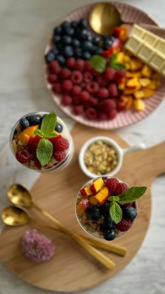

Moja beleška
Sačuvano
Ocena
Sastojci
- Sastojci za dve čaše
- Dodatno
Priprema
Ganaš od bele čokolade Ako bih pripremala za doručak poslužila bih ga u činijice i onda bih preskočila sos od borovnica i ganaš od bele čokolade. Ovog puta je ispalo zaista kao prava poslastica prelepog bogatog ukusa. ☺️☺️ Za borovnica sos vam je potrebno maksimum 10ak minuta da borovnice ukrčkate na nižoj temperaturi sa šećerom, pred kraj sklonite sa ringle i dodajte umešan gustin sa malčice vode, promešajte i gotovo 🙌🏻 Za ganaš od bele čokolade - usitnite belu čokoladu i prelijete slatkom pavlakom ugrejanom do vrenja pa dobro umešajte. Redjala sam: musli - grčki jogurt - borovnica sos - malo ganaša - sveže voće i ponavljala dok nisam popunila čaše.
Originalni opis sa Instagrama
Hrskavi parfe 🍑🍓🍒 Neodoljivo, lagano, kremasto i hrskavo, pravo letnje osveženje u čaši 🙌🏻 Iskoristila sam XXL nedelju u @lidlsrbija , obavila nabavku, a vama ostavljam recept i jedva čekam utiske 🥰 Sastojci za dve čaše: •400 gr grčkog jogurta •1 vanilin šećer •50 ml vocnog jogurta (breskva - marakuja) •8-10 kašika hrskavog muslija •sveže voće po ukusu (borovnica, malina, breskva) Dodatno: •Borovnica sos •2 šake borovnica •2 kašike šećera •1 kašika gustina umešana sa malčice vode Ganaš od bele čokolade •50 gr bele čokolade •20 ml slatke pavlake Ako bih pripremala za doručak poslužila bih ga u činijice i onda bih preskočila sos od borovnica i ganaš od bele čokolade. Ovog puta je ispalo zaista kao prava poslastica prelepog bogatog ukusa. ☺️☺️ Za borovnica sos vam je potrebno maksimum 10ak minuta da borovnice ukrčkate na nižoj temperaturi sa šećerom, pred kraj sklonite sa ringle i dodajte umešan gustin sa malčice vode, promešajte i gotovo 🙌🏻 Za ganaš od bele čokolade - usitnite belu čokoladu i prelijete slatkom pavlakom ugrejanom do vrenja pa dobro umešajte. Redjala sam: musli - grčki jogurt - borovnica sos - malo ganaša - sveže voće i ponavljala dok nisam popunila čaše. Uživajte 🌸🌸🌸 • • • #parfe #ukusno #ukusnahrana #poslastica #dezertucasi #voce #vocnidezert #idejezadezert